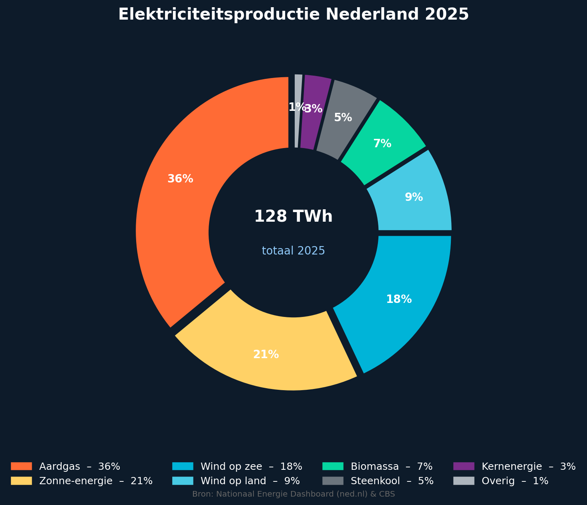

Energie van de zon
Het klimaat wordt vooral bepaald door de energie van de zon. Zonnestraling bereikt de aarde en verwarmt het aardoppervlak. Een deel van deze straling wordt teruggekaatst. Dat heet reflectie. Hoeveel straling wordt teruggekaatst, hangt onder andere af van het albedo-effect. Een licht oppervlak, zoals ijs of sneeuw, kaatst veel straling terug. Een donker oppervlak neemt juist meer straling op.
De aarde geeft de opgenomen energie weer af als warmtestraling. In de atmosfeer zitten broeikasgassen, zoals waterdamp en koolstofdioxide. Deze gassen houden een deel van de warmtestraling vast. Daardoor blijft de aarde warm genoeg om leefbaar te zijn. Dit heet het broeikaseffect.
Waterkringloop en weer
Water speelt ook een belangrijke rol in het klimaat. Door verdamping verandert vloeibaar water in waterdamp. Als waterdamp afkoelt, ontstaat condensatie en vormen zich wolken. Uiteindelijk valt het water weer terug naar de aarde als neerslag. Deze kringloop beïnvloedt het weer en op langere termijn ook het klimaat.
Daarbij is convectie belangrijk. Warme lucht stijgt op, terwijl koudere lucht daalt. Zo worden warmte en waterdamp door de atmosfeer verplaatst. Ook verstrooiing speelt een rol: lichtstralen worden in de atmosfeer alle kanten op verspreid. Daardoor ziet de lucht er blauw uit en wordt zonlicht niet overal op precies dezelfde manier waargenomen.
Het klimaat is dus het resultaat van meerdere natuurkundige processen die met elkaar samenhangen: straling, warmte, verdamping, condensatie, convectie, reflectie en verstrooiing. Juist doordat al deze processen samenwerken, is het klimaat een complex systeem.
